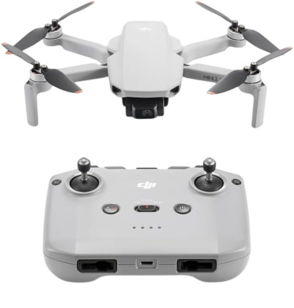
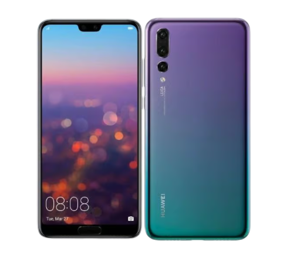
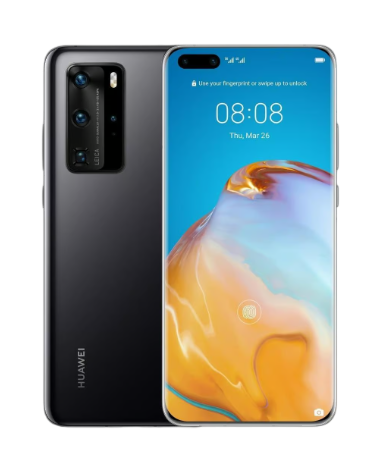

DJI Mini 2 SE
2.7K: 2720×1530@24/25/30fps
FHD: 1920×1080@24/25/30/48/50/60fps

40 MP, f/1.8, 27mm (wide), 1/1.7", PDAF, OIS
8 MP, f/2.4, 80mm (telephoto), 1/4.0", PDAF, OIS, 3x optical zoom
20 MP B/W, f/1.6, 27mm (wide), 1/2.7"
Laser AF, color spectrum sensor, Leica optics, LED flash, HDR, panorama
Video 4K@30fps, 1080p@60fps, 1080p@30fps (gyro-EIS), 720p@960fps

50 MP, f/1.9, 23mm (wide), 1/1.28", 1.22µm, dual pixel PDAF, OIS
12 MP, f/3.4, 125mm (periscope telephoto), PDAF, OIS, 5x optical zoom
40 MP, f/1.8, 18mm (ultrawide), 1/1.54", PDAF
TOF 3D, (depth)
Leica optics, color spectrum sensor, LED flash, panorama, HDR
4K@30/60fps, 1080p@30/60fps, 720@7680fps, 1080p@960fps, HDR; gyro-EIS